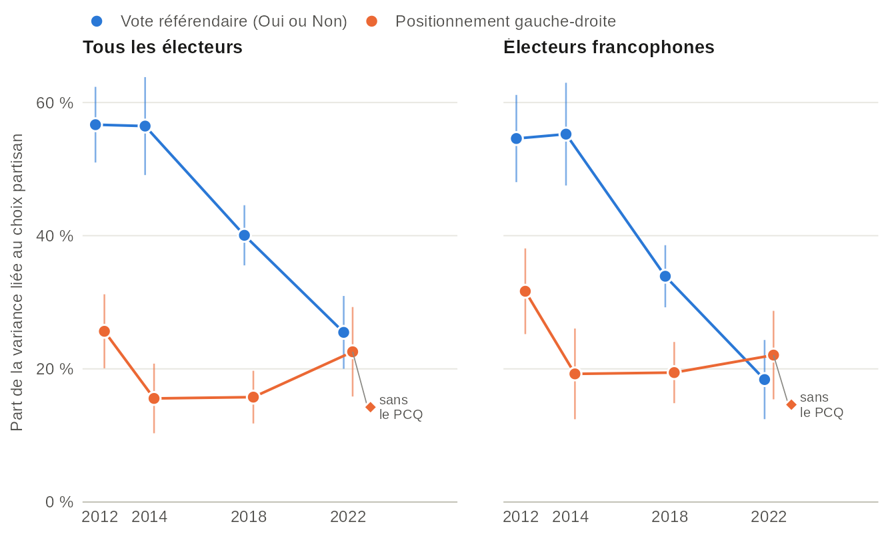
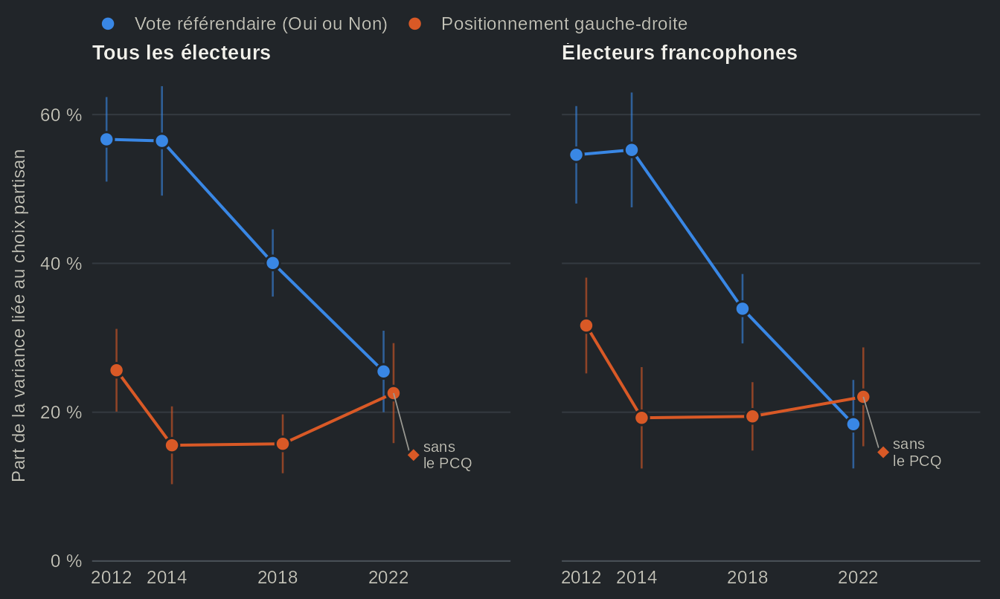

qesR charge dans R les Études électorales québécoises, avec les panels et les sondages qui les ont accompagnées : sept élections provinciales, de 1998 à 2022, chaque étude par son code, à partir de son fichier original. Leurs codebooks, le libellé de leurs questions et une recherche dans toutes les études sont livrés avec le package et fonctionnent sans réseau, en français et en anglais. qesR harmonise aussi 11 de ces études en un seul tableau, de sorte qu’une question sur 25 ans d’élections québécoises peut être examinée dans chaque étude, puis comparée d’une étude à l’autre.




Chaque estimation est faite dans une seule étude, avec la pondération de cette étude lorsqu’elle en a une qui est validée et un intervalle de confiance à 95 % ; rien n’est regroupé d’une étude à l’autre. Démarrer mène d’un code d’étude à une estimation pondérée, sans réseau, sur une petite étude synthétique livrée avec qesR.
Exemples
Chaque page confronte une croyance répandue sur les élections québécoises aux données des études.
- De deux partis à quatre : le vote s’est fragmenté de 1998 à 2022, mais surtout chez les francophones, et à l’intérieur de chaque camp sur la souveraineté plutôt qu’entre eux.
- Les jeunes sont-ils encore les plus souverainistes ? : les plus jeunes francophones étaient les plus enclins à voter Oui en 2007 et les moins enclins en 2022, surtout à la suite d’un changement à l’intérieur des cohortes.
- Deux dimensions : souveraineté et gauche-droite : la question nationale structure moins le vote qu’en 2012, et l’axe gauche-droite n’a pas pris sa place.
- Qui vote ? : les jeunes déclarent voter moins que leurs aînés à chaque élection depuis 1998, et l’intérêt pour la politique n’explique qu’une petite part de l’écart.
- Les élections québécoises se jouent-elles pendant la campagne ? : les mêmes répondants, interrogés avant et après le vote, montrent qu’une campagne déplace beaucoup d’électeurs, mais, une fois les gains et les pertes additionnés, peu de votes.
- Les enquêtes sous-estiment-elles les libéraux ? : le vote libéral a été sous-déclaré de 2007 à 2014, mais l’écart s’est estompé en 2018 et en 2022.
- Recettes : le code, pas à pas, pour savoir si le clivage linguistique du vote libéral s’est resserré à mesure que la question de la souveraineté reculait.
Installation
# install.packages("remotes")
remotes::install_github("ThomasGareau/qesR")Une fois qesR accepté sur le CRAN,
install.packages("qesR") fera de même. Une première
session :
library(qesR)
options(qesR.lang = "fr") # messages et erreurs en français
qes_studies() # les études, sans réseau
qes2018 <- get_qes("qes2018") # une étude, à partir de son fichier original
qes_search("souverain|sovereign") # une question, dans toutes les études
h <- qes_harmonize(targets = "vote_choice") # le vote, dans six études
d <- qes_decon(lang = "fr") # toutes les études en un seul tableau, soupleCiter qesR
Un travail qui utilise qesR devrait citer le package et chaque étude
dont il se sert. qes_cite() écrit les deux, avec le DOI de
chaque jeu de données :
Citer qesR et les études donne la citation de chaque étude.
Licence
Le code de qesR est sous licence MIT. Les données ne font pas partie du package : qesR télécharge chaque étude depuis son dépôt sur Borealis ou le Harvard Dataverse. La plupart des études sont diffusées sous CC0 ; l’étude de 2022, et les métadonnées que qesR en livre, sont sous CC BY-NC 4.0 (attribution, pas d’usage commercial). Détails et attribution requise.
Toutes les pages en français
- Études : le catalogue des études, avec le tableau des pondérations, et citer qesR et les études.
- Harmonisation : comment fonctionne
l’harmonisation, un seul fichier pour toutes
les études avec
qes_decon(), la couverture par étude, la référence des variables, la validation par les résultats officiels et le fichier fusionné. - Les fonctions : l’aperçu des fonctions en français.
- Pour du code écrit avec une version antérieure de qesR : passer à la version actuelle.